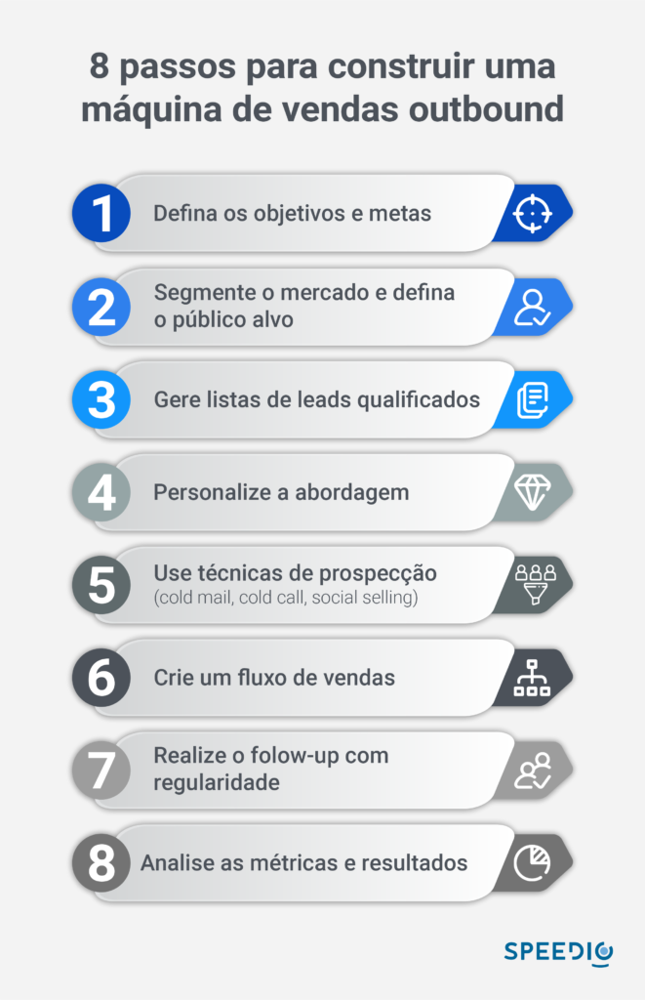

Artigos da Categoria
Máquina de vendas outbound: 8 passos para montar uma
Veja quais processos e boas práticas são necessários para ter uma máquina de vendas outbound na sua empresa.
Neste post você verá
O que é a máquina de vendas outbound?
Antes de falarmos sobre os benefícios do outbound, é essencial compreender o conceito dessa máquina de vendas. A estratégia consiste em um conjunto de processos, ferramentas e técnicas utilizadas para impulsionar a prospecção e a conversão de leads em clientes.
Diferente do inbound marketing, um modelo de prospecção em que os clientes chegam até a empresa, nas vendas outbound, a equipe de vendas toma a iniciativa de entrar em contato com potenciais clientes, seja por e-mail, telefone, redes sociais ou outras formas de comunicação direta, o que torna a jornada de compra menor.
8 passos para montar uma máquina de vendas outbound
1 – Defina os objetivos e metas
Estabelecer objetivos e metas claras e específicas para a máquina de vendas outbound é fundamental para orientar o foco e o direcionamento da equipe de vendas. Metas bem definidas permitem que a equipe compreenda o que é esperado e quais resultados devem ser alcançados, criando um senso de propósito e motivação.
Além disso, metas mensuráveis e atingíveis facilitam o monitoramento do progresso da estratégia, permitindo que os gestores avaliem o desempenho da equipe e façam ajustes quando necessário.
2 – Identifique o público-alvo e o segmento
É essencial compreender as características, preferências e necessidades específicas do cliente ideal, pois isso permite que a empresa direcione seus esforços de forma mais estratégica e eficiente.
Realizar pesquisas de mercado, coletar dados demográficos e analisar o comportamento dos clientes são formas de obter informações valiosas para a identificação do público-alvo.
Com base nesse conhecimento, é possível segmentar os leads em grupos com perfis similares, agrupando-os de acordo com suas características e interesses em comum. Essa segmentação torna as abordagens mais direcionadas e personalizadas, possibilitando que a equipe de vendas entregue mensagens mais relevantes e persuasivas.
3 – Construa uma lista de leads qualificados
Para construir uma lista de leads qualificados na máquina de vendas outbound, é fundamental utilizar técnicas eficazes que garantam a identificação de potenciais clientes interessados no produto ou serviço oferecido.
A pesquisa de mercado é uma das estratégias-chave, permitindo obter informações relevantes sobre o público-alvo, suas necessidades e preferências.
Para realizar toda essa pesquisa e análise é preciso matéria prima: dados. A Protocolo Hidra é uma ferramenta de geração de leads B2B que possui informações sobre todas as empresas ativas no Brasil.
Além disso, parcerias estratégicas com outras empresas ou profissionais do mesmo segmento podem ampliar o acesso a leads qualificados, aproveitando a base de contatos de parceiros que compartilham interesses comuns.
4 – Personalize a abordagem estratégica
Ao pesquisar previamente os leads e conhecer suas características, necessidades e preferências específicas, a equipe de vendas pode adaptar a comunicação de forma mais relevante e adequada a cada cliente em potencial.
Essa abordagem personalizada cria um vínculo mais forte com o lead, transmitindo a sensação de que a empresa realmente entende suas demandas e está disposta a oferecer soluções sob medida para suas necessidades.
A personalização gera confiança e credibilidade, o que pode ser determinante para que o cliente em potencial avance no processo de compra e se torne um cliente satisfeito e leal no futuro.

5 – Use técnicas de prospecção
As técnicas eficazes de prospecção na máquina de vendas outbound incluem o uso de cold calls (chamadas a frio), e-mails personalizados e mensagens em redes sociais.
Nas cold calls, é essencial que o vendedor inicie o diálogo de forma profissional e personalizada, identificando-se e explicando o motivo do contato de maneira clara e objetiva.
No caso dos e-mails personalizados, a abordagem deve ser cuidadosamente elaborada, destacando como o produto ou serviço pode solucionar problemas específicos do lead.
Já nas mensagens em redes sociais, como o social selling no LinkedIn, é importante estabelecer uma conexão antes de apresentar a oferta, mostrando interesse genuíno no perfil do lead e demonstrando como a solução oferecida pode agregar valor à sua vida ou negócio.
O primeiro contato é de extrema relevância, pois é nesse momento que o cliente em potencial forma sua primeira impressão da empresa.
6 – Crie um fluxo de vendas eficaz
Construir um fluxo de vendas organizado é essencial para o sucesso da máquina de vendas outbound. Cada etapa do fluxo é cuidadosamente definida para guiar os leads pelo funil de vendas, desde o primeiro contato até a decisão de compra.
As etapas são planejadas de forma estratégica, correspondendo às necessidades e estágios específicos dos leads, proporcionando uma experiência de compra personalizada e relevante.
O fluxo de vendas visa nutrir o relacionamento com os leads ao longo do processo, oferecendo informações relevantes e conduzindo-os de maneira gradual e persuasiva em direção à decisão de compra.
Uma abordagem bem-estruturada no fluxo de vendas contribui para aumentar a eficiência da equipe de vendas e melhora a experiência do cliente, tornando o processo de vendas mais fluído e assertivo.
7 – Realize o follow-up
O follow-up consistente e estruturado permite manter o interesse dos leads ao longo do processo de vendas e fortalece o relacionamento com eles.
Após o primeiro contato, muitos leads podem não estar prontos para tomar uma decisão imediata de compra, mas uma abordagem de follow-up adequada possibilita que a empresa permaneça presente e relevante em suas mentes.
Ao fornecer informações adicionais, responder dúvidas e oferecer suporte personalizado, o acompanhamento contribui para a construção de uma conexão duradoura e confiável com os leads, o que aumenta a probabilidade de que eles se tornem clientes em algum momento.
8 – Analise os resultados
Através de métricas-chave como taxa de conversão, tempo médio de conversão e ROI, a empresa pode avaliar o desempenho da máquina de vendas outbound e identificar pontos fortes e áreas de melhoria.
Esses dados fornecem insights valiosos sobre o desempenho da equipe de vendas, a eficácia das abordagens utilizadas e o retorno do investimento realizado.
Com base nas informações coletadas, a empresa pode realizar ajustes e otimizações na estratégia, direcionando recursos para as táticas mais bem-sucedidas e corrigindo eventuais falhas, a fim de impulsionar o desempenho geral da máquina de vendas outbound e alcançar melhores resultados comerciais.
Reduzir o CAC através da máquina de vendas outbound
O custo de aquisição de clientes (CAC) é um indicador crucial para o sucesso de qualquer empresa. Quanto menor o CAC, maior é a eficiência do negócio.
Nesse contexto, a estratégia de vendas outbound no B2B tem se destacado como uma poderosa aliada na redução dos custos de aquisição de clientes, otimizando o processo de vendas e impulsionando o crescimento das empresas.
Curso do esforço de vendas
Com o uso da máquina de vendas outbound, uma boa equipe comercial pode direcionar seus esforços para contatar leads altamente qualificados e com maior potencial de conversão. Isso evita o desperdício de tempo e recursos com leads pouco qualificados, resultando em um CAC mais baixo.
Personalização e segmentação
A máquina de vendas outbound permite a personalização das abordagens de vendas para cada cliente em potencial. Quanto maior a personalização for, mais altas são as chances de sucesso nas conversões, garantindo um melhor retorno sobre o investimento (ROI) em relação ao CAC.
Aumento da taxa de conversão
Através de uma abordagem proativa, os representantes de vendas podem interagir diretamente com os leads, esclarecer dúvidas e fornecer informações relevantes. Essa interação humana pode criar um senso de confiança e empatia, o que aumenta a taxa de conversão de leads em clientes pagantes.
Maior velocidade no processo de vendas
É possível agilizar o ciclo de vendas, reduzindo o tempo necessário para converter um lead em cliente. Ao otimizar esse processo, a empresa consegue adquirir clientes de forma mais rápida, diminuindo o CAC a longo prazo.
Análise de métricas e otimização contínua
Permite uma análise detalhada das métricas de vendas, como taxa de conversão, taxa de resposta, tempo médio de conversão, entre outras. Essa análise possibilita a identificação de pontos fracos no processo de vendas, permitindo melhorias constantes que levam à redução do CAC.
Integração com marketing e qualificação de leads
Ao unir as estratégias das áreas marketing e vendas, é possível garantir que os leads recebidos sejam de melhor qualidade.
Personalização e ABM (account-based marketing)
Como falamos anteriormente, a personalização é uma estratégia essencial para se destacar da concorrência e estabelecer uma relação sólida com os clientes. Aliada à abordagem do Account-Based Marketing (ABM), a personalização se revela uma combinação poderosa para impulsionar o sucesso nas vendas.
O que é o account-based marketing (ABM)?
O marketing baseado em contas é uma abordagem estratégica que coloca o cliente no centro das ações de marketing e vendas. Em vez de focar em uma ampla audiência, o ABM concentra seus esforços em contas específicas ou empresas que têm grande potencial de se tornarem clientes.
Estratégias de ABM envolvem criar campanhas altamente personalizadas e direcionadas, desenvolvidas com base nas necessidades e interesses únicos de cada conta.
A Importância da Personalização no ABM
Conexão emocional
A personalização permite criar uma conexão emocional com seus clientes em potencial. Ao demonstrar que compreendem as necessidades e desafios específicos de cada conta, as empresas conseguem estabelecer um vínculo mais profundo e significativo.
Relevância e engajamento
Conteúdos e mensagens personalizadas são muito mais relevantes para os prospects. Isso aumenta muito as chances de engajamento, uma vez que o cliente em potencial percebe que a empresa está oferecendo soluções adaptadas às suas necessidades.
Aumento das taxas de conversão
A personalização no ABM resulta em maiores taxas de conversão. Ao fornecer informações e recursos relevantes em cada etapa do processo de compra, as empresas aumentam a confiança do cliente e a probabilidade de que ele avance no funil de vendas.
Redução do ciclo de vendas
Com um enfoque mais direcionado, a personalização permite antecipar as necessidades do cliente em potencial e responder de forma ágil. Isso contribui para a redução do ciclo de vendas, já que a empresa pode fornecer as informações necessárias no momento certo.
Fortalecimento da marca
Ao mostrar que valoriza cada cliente em potencial de forma única, a empresa reforça sua imagem de marca e constrói uma reputação positiva no mercado.
Como implementar a personalização no ABM
Pesquisa e análise
Conhecer profundamente as necessidades, interesses e desafios de cada conta é fundamental. Realize pesquisas e análises detalhadas para obter insights relevantes.
Segmentação adequada
Divida suas contas-alvo em segmentos com características e interesses semelhantes. Isso permite criar mensagens e campanhas altamente direcionadas.
Ferramentas para coletar dados
Para realizar toda essa pesquisa e análise é preciso matéria prima: dados. A Protocolo Hidra é uma ferramenta de geração de leads B2B que possui informações sobre todas as empresas ativas no Brasil.
Com essa base de dados, você consegue segmentar o mercado e encontrar prospects que estão dentro do seu perfil de cliente ideal.
Conteúdo relevante
Desenvolva o marketing de conteúdo personalizado para cada segmento, abordando os problemas específicos que cada conta enfrenta.
Comunicação personalizada
Utilize canais de comunicação direcionados, como e-mails personalizados, chamadas telefônicas e reuniões individuais.
Acompanhamento contínuo
Mantenha um acompanhamento constante para ajustar e adaptar suas abordagens à medida que as necessidades das contas evoluem.
Ter uma máquina de vendas outbound bem estruturada é capaz de é fundamental e combinar esse conjunto de estratégias e boas práticas é caminho para alcançar o objetivo principal: vender mais com menos custo.
para sua empresa